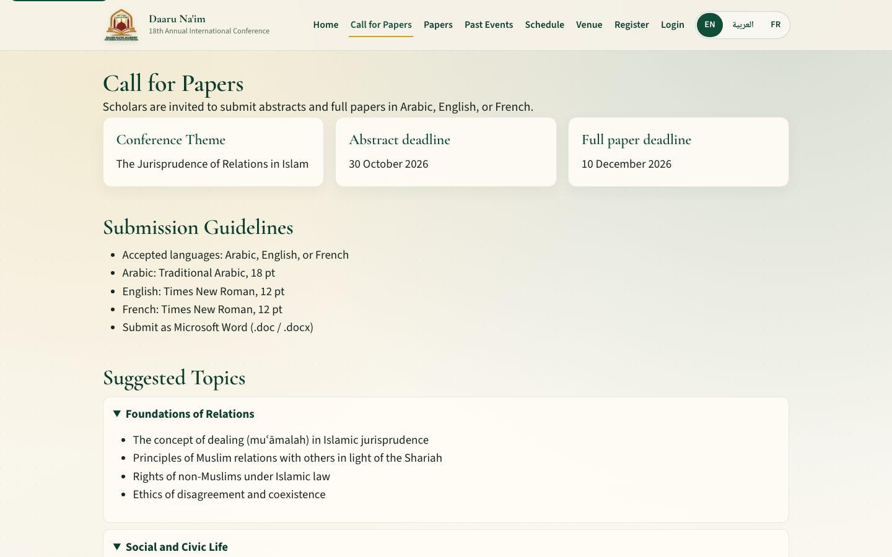

DaaruNaim Conference — International Conference Web Platform
Production conference web platform built at Fingletek for the 18th Annual International Conference 2027


Overview
DaaruNaim Conference is a production conference web platform that centralises public event information and participant-facing entry points for the Daaru Na’im Academy for Shariah Sciences of Nigeria’s 18th Annual International Conference 2027.
I built the production web platform as part of my work at Fingletek. The live site at conference.daarunaim.ng provides a structured public experience around conference information, theme and about content, important dates, call for papers, submission entry points, programme/schedule, venue and contact information, papers, previous events, and registration/login pathways. This page describes the software product work—not conference organisation, academic review, or editorial ownership.
The Platform
Public routes and homepage sections present a dedicated digital presence for the annual international conference, including:
- Home overview with theme, dates, countdown, and primary CTAs
- Call for Papers with submission guidelines and language requirements
- Papers archive browsing across conference editions
- Past Events materials
- Schedule / programme sessions
- Venue and contact information
- Registration and participant/login entry points
- Multilingual UI switching (English, Arabic, French)
Paper-submission entry points are publicly linked; authenticated submission/admin workflows are not exposed or described here.
The Product Need
The conference needed a dedicated online presence—separate from the main school website—so visitors and prospective participants could find event-specific information and clear next actions in one place.
The engineering task was to deliver a maintainable, responsive web application that organises conference content, exposes registration and paper-related pathways, and integrates with conference APIs for dynamic public data.
What I Built
I developed and delivered the production conference web application:
- Responsive React/Vite frontend for the public conference experience
- Navigation and page structure across major conference sections
- Presentation of theme, dates, CFP, programme, venue, papers, and past events
- API-integrated loading of public conference content
- Registration, login, and paper-submission entry pathways
- Production configuration, deployment support, debugging, and iterative fixes
My Contribution
I built the production web platform as part of my work at Fingletek, focusing on the software implementation and maintainable public experience:
- Implemented the production web application
- Developed the responsive frontend UI
- Implemented navigation and information architecture
- Presented conference content across public sections
- Integrated frontend pathways with conference REST APIs
- Supported registration and paper-submission entry points
- Contributed to production configuration and deployment
- Debugged and iterated on production fixes and improvements
This ownership covers the web platform software. Conference organisation, academic review decisions, editorial policy, event operations, and institutional branding are not claimed as individual authorship.
User / Conference Flow
High-level public user flow based on the live navigation and calls to action:
Arrives on the conference homepage
Theme, about, and important dates
Call for Papers or registration paths
Schedule and venue/contact details
Login or paper-submission entry point
This is a high-level public user flow. Private submission, review, and admin workflows are not shown.
Frontend & User Experience
The public application is a React SPA built with Vite. Verified frontend work includes:
- Responsive layout and conference navigation across desktop and mobile
- Clear information hierarchy from hero overview to sectioned content
- Reusable UI sections for dates, guidelines, cards, and CTAs
- Important-dates and countdown presentation on the homepage
- Dedicated pages for Call for Papers, Papers, Past Events, Schedule, Venue, Register, and Login
- Multilingual interface switching (EN / Arabic / FR)
- API-integrated UI states for public conference data
Application Integration
The frontend communicates with public conference REST APIs to load dynamic content. Verified integration behaviour includes:
- Frontend-to-API requests for conference settings and related public resources
- Dynamic loading of papers, CFP topics, schedule sessions, and past-events data
- Entry points into registration, login, and paper-submission account workflows
- Interface state handling as API-backed content populates public views
Private API routes, tokens, schemas, authentication internals, and backend stack details are intentionally omitted.
Content & Information Architecture
The platform organises visitor-facing conference content into a coherent structure:
- Overview — edition identity, theme, dates, and primary actions
- Theme / About — scholarly context for the gathering
- Important Dates — abstract, full-paper, and event timelines
- Call for Papers — guidelines, languages, and submission entry
- Programme / Schedule — session-oriented programme presentation
- Venue / Contact — location and organiser contact details
- Papers / Past Events — archive browsing across editions
- Registration / Login — participant account entry points
Information architecture and presentation are software product work. Editorial ownership of conference copy remains with the organising institution.
Production Engineering
Vite Production Build
Frontend assets are delivered as a Vite-built React application on the public domain.
Nginx Edge
The live site is served behind Nginx with HTTPS on the conference domain.
API Integration
Public conference views are wired to REST endpoints for dynamic content loading.
Ongoing Maintenance
Production configuration, debugging, and iterative fixes keep the live platform maintainable.
Technologies
Specific technologies are listed only where verified from the live deployment:
Outcome
Production Platform
Delivered a live international-conference web platform on the public domain.
Centralised Information
Unified conference information and participant entry points in one visitor experience.
Responsive Experience
Implemented a participant-facing responsive UI across major conference sections.
Connected Pathways
Connected public content with registration and paper-submission-oriented entry points.
Maintained Delivery
Deployed and maintained the live production application through debugging and iterative improvements.
No attendee counts, submission volumes, acceptance rates, traffic, uptime, or conversion metrics are claimed here.